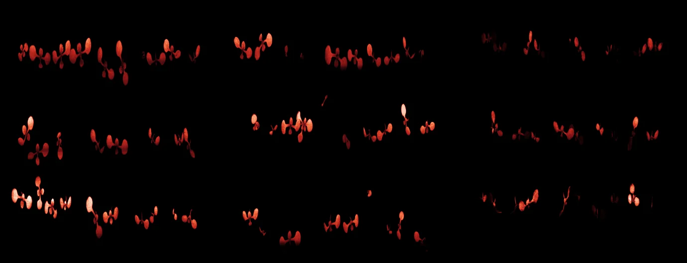
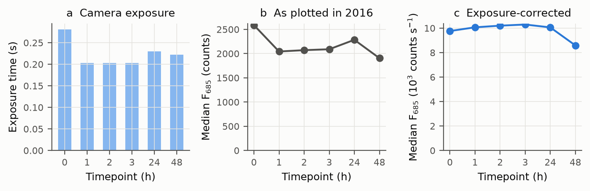
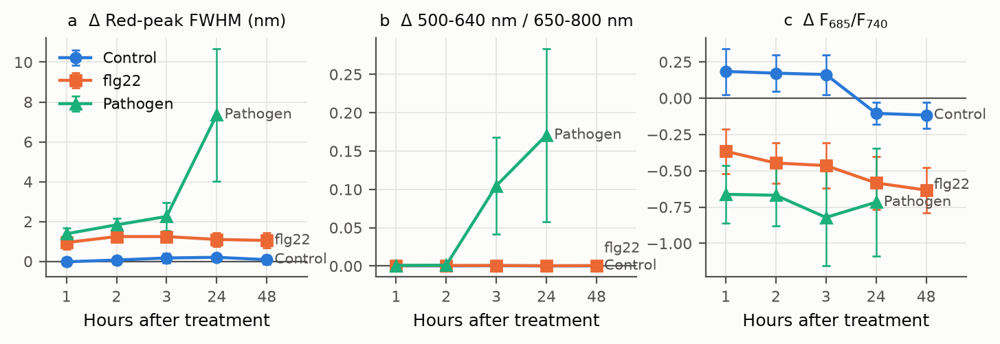
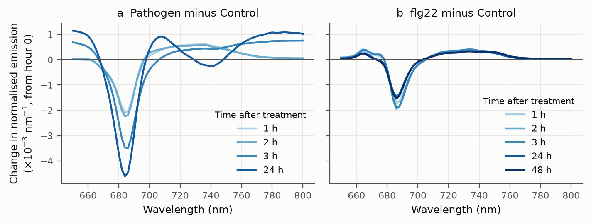
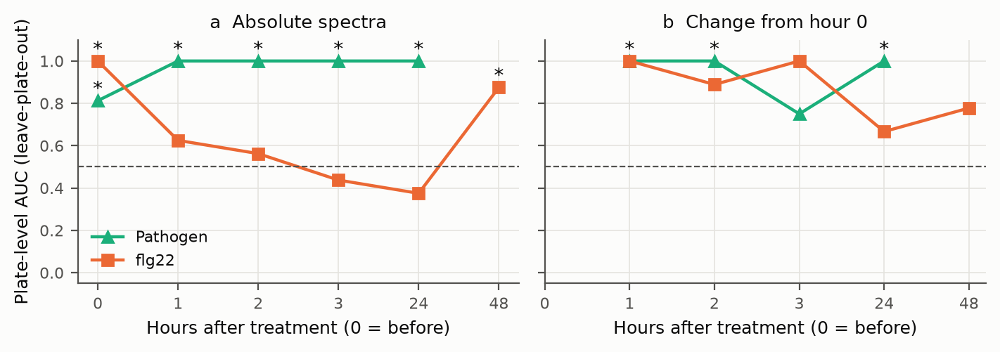
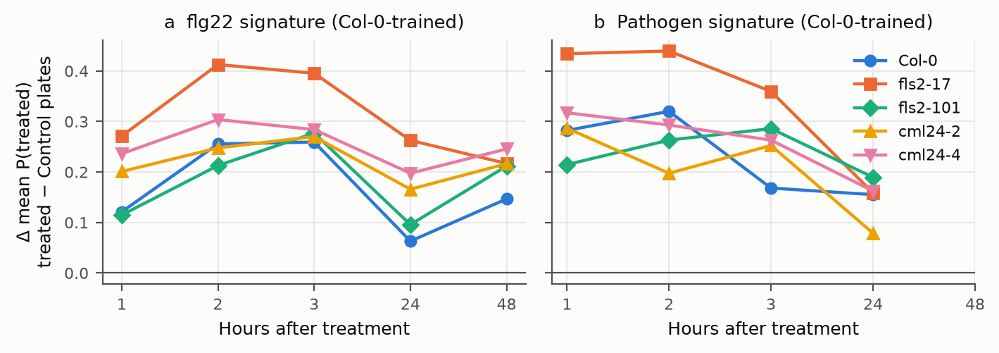
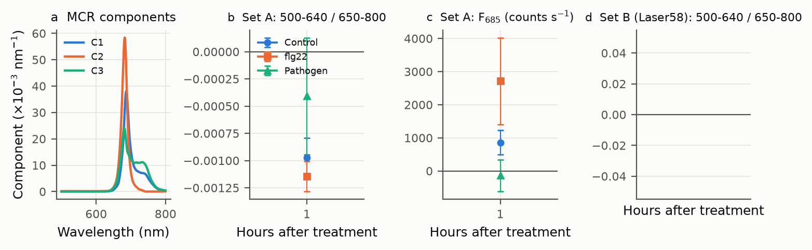
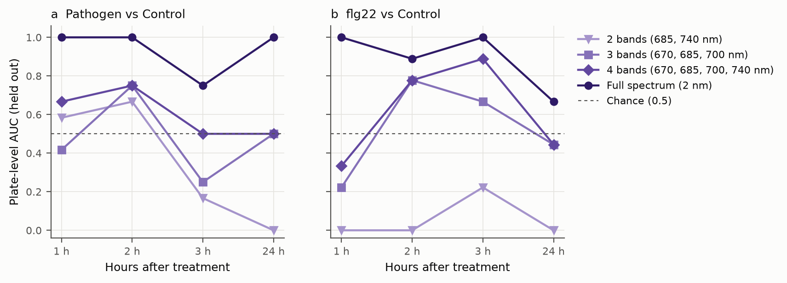
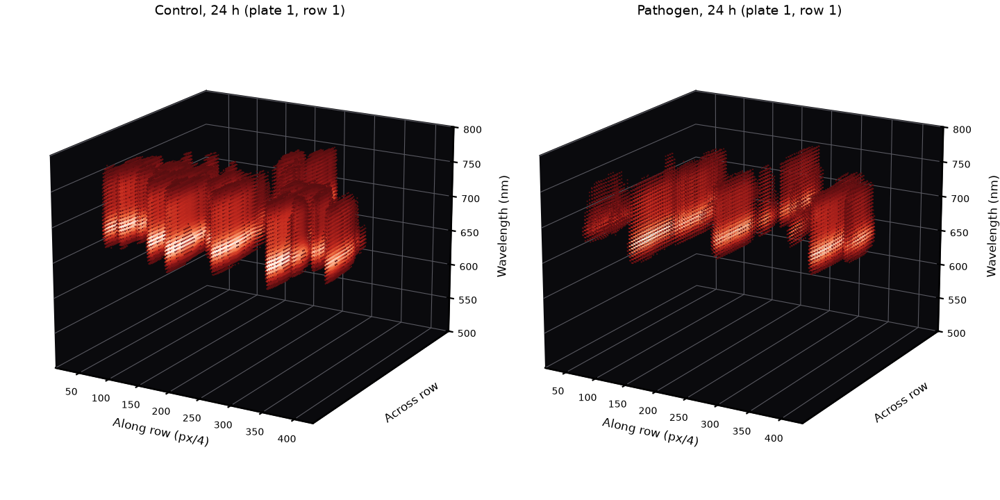

Can fluorescence hyperspectral imaging see a seedling respond to bacteria?
In 2016 we imaged Arabidopsis seedlings by fluorescence hyperspectral imaging before and after treatment with a mock solution, the flagellin epitope flg22 or Pseudomonas syringae. Five genotypes were imaged: Col-0, two fls2 flagellin-receptor mutants and two cml24 Ca2+-sensor mutants. Our reanalysis finds a pathogen signature from 1 hour after inoculation. It also finds that the flg22 signal in this experiment does not depend on FLS2, so it is not perception.

1 h
Earliest pathogen effect: red emission peak {{pathFwhmOnenm}} nm broader than in Control plates, relative to each plate's own baseline (q = {{pathFwhmOneq}}). It persists to 24 h, joined by more emission below 640 nm from 2 h.
AUC {{aucPathTwo}}
Leave-plate-out classification of infected vs Control plates from change-from-baseline spectra at 1, 2 and 24 h (exact permutation p = {{pPathTwo}}).
{{rawDropPct}}% → {{cpsDiffPct}}%
The 2016 summaries' intensity drop after treatment shrinks to within {{cpsDiffPct}}% once each cube is divided by its exposure time.
AUC {{aucPlaceboFlg}} at hour 0
Plates were separable before treatment, so only change from baseline is evidence. The flg22 signal is as strong in fls2 as in Col-0.
The experiment
Seedlings on square agar plates were imaged in the Gilroy Lab (UW-Madison Botany) with a MacroPhor fluorescence hyperspectral line-scan imager (Middleton Spectral Vision), using 488 nm excitation and recording 324 bands from 400 to 809 nm. Each plate held five genotype lanes and was imaged as three row-scans. Four plates per treatment were imaged before treatment and at 1, 2, 3, 24 and 48 h. An independent November 2016 replicate used 405 nm excitation with Col-0 and both fls2 lines. Facts still to be confirmed (allele stock records, growth light and temperature) are listed openly in FACTS_PENDING.md.
The decisive control is genetic. An flg22 signature that reflects perception must disappear in fls2 mutants, which lack the flagellin receptor. The pathogen is still perceived through other bacterial patterns, so its signature need not.
See the plants
Every image below is the seedlings' own chlorophyll fluorescence, rendered from the raw cubes: red light emitted at 685 nm under 488 nm excitation. Each plate is three row-scans stacked top to bottom, turned so the five genotype lanes run left to right in the same order on every plate (A Col-0, B fls2-17, C fls2-101, D cml24-2, E cml24-4). Step through the hours to watch Control seedlings grow and Pathogen seedlings fade. Switch to As recorded to see the camera-setting problem: the same plants look brighter at hour 0 only because that scan was exposed longer.
Lanes: A Col-0 · B fls2-17 · C fls2-101 · D cml24-2 · E cml24-4
Plates were not registered across time (seedlings were moved between scans), so compare
plants by lane, not by pixel. Hour-0 plates were imaged inverted with a wider camera window; every row-scan is
cropped to the band holding its seedlings. Lane order for Pathogen 48 h could not be checked against the 2016
hand ROIs (none exist), so its lanes are unlabelled. Images: docs/media/plates/ from
scripts/12_site_media.py.
What we had to fix first
| Problem | What we did |
|---|---|
| Exposure time changed between timepoints (0.305 s at hour 0, 0.203 s at 1–3 h, 0.22–0.27 s later). | Divided every intensity by its own exposure, and based the primary analysis on exposure-independent spectral shape. |
| Hour-0 scans saturated the 12-bit detector (up to {{satHzeroMaxPct}}% of a cube's seedling pixels). | Excluded saturated pixels. |
| Plates differed before treatment (classifier AUC {{aucPlaceboFlg}} at hour 0). | Analysed only change from each plate's own hour-0 baseline, with the plate as the experimental unit. |
| {{nOffsetRoi}} hand-drawn spectra, all on Pathogen plates, were exported without dark subtraction (a flat ~{{offsetMedian}}-count offset that mimics broad autofluorescence). | Subtracted each spectrum's own mean below the 488 nm excitation line (420–470 nm), where nothing can fluoresce. |
| Hour-0 plates were scanned "inverted", apart from a few later rescans. | Excluded the two plates with mixed hour-0 scans from baseline analyses. |
| Plates were not always placed in the same orientation. | Found each plate's genotype-lane direction from the 2016 hand-drawn ROIs. |
| November hand ROIs cover one plate per treatment. | Treated set-B treatment effects as not estimable from ROIs; plate-replicated analysis comes from the raw cubes. |

Results
An early pathogen signature


Classification, and why baseline matters

The flg22 signal is not FLS2-dependent

Every seedling in the raw cubes

{{nSeedA}} seedlings segmented from the July cubes reproduce the early signature without the 2016 annotations. 685 nm emission then falls (by {{pathSeedCpsFortyEight}} counts s−1 at 48 h) and seedlings shrink. Curve resolution finds no separate broad autofluorescence component. Bacteria-only scans do not fluoresce, so the signal is the plant's. In the November replicate, a deteriorating Control plate showed the largest short-wavelength rise, so that emission marks damage, not infection specifically. No CML24 effect replicated.
From plate to practice: early detection outside the lab
Chlorophyll fluorescence imaging is an established way to see how pathogens affect photosynthesis (Rolfe & Scholes 2010). Optical sensors of several kinds are being developed to detect disease early, from single leaves to whole fields (Mahlein 2016). What does this experiment add? We asked two practical questions, fixed in advance and committed before the analysis was run.
1. If a scanner had been watching these plates, what would it have flagged?
We replayed the experiment as a monitoring run. At each hour, every plate was scored by a model that had never seen it, trained on how each plate's Col-0 emission spectra had changed since its own pre-treatment scan. A plate is flagged when its probability of infection exceeds 0.5. Press play to watch the run unfold.
Cells: the plate's mean held-out probability of infection. ▲ with an outline = flagged. flg22 plates
were never used in training; they test whether the alarm also fires on a non-bacterial challenge. Control-4 and
flg22-2 are excluded because their hour-0 scans were partly upright rescans. The run stops at 24 h because Pathogen
48 h has no hand-drawn spectra. Data: alarm.json (from tables/alarm_replay.csv).
Result. {{alarmPathFirstOne}} of the {{nAlarmPathPlates}} Pathogen plates were flagged from the first scan after inoculation (1 h), and the last by {{alarmPathLatestFirst}} h ({{alarmPathHits}} of {{alarmPathCells}} Pathogen plate-hours). {{alarmCtrlHits}} of {{alarmCtrlCells}} Control plate-hours were flagged. The flg22 plates were flagged too, at {{alarmFlgEarlyHits}} of {{alarmFlgEarlyCells}} plate-hours in the first 3 h, but {{alarmFlgLateHits}} of {{nAlarmFlgPlates}} at 24 h, when {{alarmPathLateHits}} of {{nAlarmPathPlates}} Pathogen plates were still flagged. So a single flag means "this plant has been challenged"; a flag that persists is what pointed to infection. With three or four plates per group this is a demonstration, not a validated detector.
2. The spectral alarm comes before visible damage
- 0 hBaseline scan of every plate. Essential: plates differed before treatment (classifier AUC {{aucPlaceboFlg}} at hour 0).
- 1 hRed emission peak {{pathFwhmOnenm}} nm broader on Pathogen plates (q = {{pathFwhmOneq}}); {{alarmPathFirstOne}} of {{nAlarmPathPlates}} Pathogen plates flagged.
- 3 h685 nm emission of segmented seedlings already lower ({{pathSeedCpsThree}} counts s−1, q = {{pathSeedCpsThreeq}}).
- 24 h{{alarmPathLateHits}} of {{nAlarmPathPlates}} Pathogen plates flagged; flg22 flags gone.
- 48 h685 nm emission changed by {{pathSeedCpsFortyEight}} counts s−1 (q = {{pathSeedCpsFortyEightq}}) and seedlings were smaller (q = {{pathSeedAreaFortyEightq}}): damage you can see in the images above.
This fits earlier work in which P. syringae changed photosynthesis and chlorophyll fluorescence before symptoms (Bonfig et al. 2006).
3. Could a cheap filter camera do it?

No. Reduced to two to four {{bandWidthNm}} nm filter bands, the best plate AUC for Pathogen vs Control was {{bandFiltAucMax}} (smallest permutation p = {{bandFiltPMin}}); the classic F685/F740 ratio reached at most {{bandTwoAucMax}}. The full 2 nm spectrum reached {{bandFullAucMin}}–{{bandFullAucMax}}. The signal is a broadening of the red peak by {{pathFwhmOnenm}}–{{pathFwhmTwonm}} nm, which wide filters average away. A practical sensor needs spectrometer-class resolution across 650–760 nm.
4. What a working system would need, and why
- Scan the same plants from the startCompare every plant with its own baseline: plates here differed before treatment (AUC {{aucPlaceboFlg}} at hour 0).
- Fix and record exposureThe 2016 summaries' "drop" after treatment was a camera setting: {{rawDropPct}}% raw, {{cpsDiffPct}}% once corrected.
- Measure the dark level in every scan{{nOffsetRoi}} exported spectra kept a ~{{offsetMedian}}-count offset that looked like autofluorescence.
- Never saturateHour-0 scans saturated up to {{satHzeroMaxPct}}% of a cube's seedling pixels.
- Resolve the red peak at ~2 nmFilter bands lost the signal (best AUC {{bandFiltAucMax}}).
- Find each plant automaticallySegmenting {{nSeedA}} seedlings from the raw cubes reproduced the signature without hand annotation.
- Flag on change, confirm on persistenceflg22 plates were flagged at 1–3 h but not at 24 h; Pathogen plates stayed flagged.
- Confirm before actingThe signature is not pathogen-specific: the flg22 signal did not need FLS2, and short-wavelength emission also rose on a dying Control plate.
5. Where it could be used first
Controlled-environment farmsgreenhouses, vertical farms, growth rooms
Closest to this experiment. Lights can be switched off for a scan, geometry is fixed, and the same plants can be rescanned on a schedule from a gantry or conveyor, so the baseline and exposure rules above can be met.
Still missing: older plants and canopies instead of seedlings on agar; other crops, pathogens and strains; many more than four plates per group.
Space crop systemsVeggie, Advanced Plant Habitat, future lunar greenhouses
Disease has already happened there. Zinnias grown in Veggie on the ISS in late 2015 developed a Fusarium oxysporum infection linked to reduced airflow and water build-up (Schuerger et al. 2021). Habitats are enclosed and controlled like the farms above, and crops are few and slow to replace.
Still missing: a compact flight-qualified imager, and tests with fungal pathogens and flight crops.
Open fieldstractors, drones, satellites
Hardest. Sunlight itself excites chlorophyll fluorescence, measured as solar-induced fluorescence from towers, aircraft and satellites (Mohammed et al. 2019), but at canopy scale, far coarser than the seedling spectra here. An actively excited scanner like this one would have to work at night, under a hood, or with excitation it can separate from daylight.
Still missing: all of the above, plus distance, canopy structure, mixed pixels and weather.
What a flag does not tell you
- Which pathogen, or that it is a pathogen at all: the flg22 treatment and plain damage also shifted the spectrum.
- That the plant perceived flagellin: the flg22 signal here did not depend on FLS2.
- Anything beyond this setting: four plates per group, one bacterial strain, seedlings on agar, 488 nm excitation.
- Bonfig K.B., Schreiber U., Gabler A., et al. (2006) Infection with virulent and avirulent P. syringae strains differentially affects photosynthesis and sink metabolism in Arabidopsis leaves. Planta 225, 1–12. doi:10.1007/s00425-006-0303-3
- Mahlein A.-K. (2016) Plant disease detection by imaging sensors – parallels and specific demands for precision agriculture and plant phenotyping. Plant Disease 100, 241–251. doi:10.1094/PDIS-03-15-0340-FE
- Mohammed G.H., Colombo R., Middleton E.M., et al. (2019) Remote sensing of solar-induced chlorophyll fluorescence (SIF) in vegetation: 50 years of progress. Remote Sensing of Environment 231, 111177. doi:10.1016/j.rse.2019.04.030
- Rolfe S.A., Scholes J.D. (2010) Chlorophyll fluorescence imaging of plant–pathogen interactions. Protoplasma 247, 163–175. doi:10.1007/s00709-010-0203-z
- Schuerger A.C., Amaradasa B.S., Dufault N.S., et al. (2021) Fusarium oxysporum as an opportunistic fungal pathogen on Zinnia hybrida plants grown on board the International Space Station. Astrobiology 21, 1029–1048. doi:10.1089/ast.2020.2399
The data in 3D and 4D
A hyperspectral image is natively three-dimensional: two dimensions of position and one of wavelength. These plates were scanned six times, so time is a fourth. Below, one row of seedlings is shown as a cloud of (position, wavelength) points you can turn, slice and step through time. The plates' feature changes are drawn as paths through a three-dimensional space. We did not draw spectrum-versus-time as a 3D surface: its peaks hide its own valleys, so that view stays as the 2D explorer and Fig. 2.
One row of seedlings as a cube: position × wavelength, through time

Plate 1, row 1. Each point is a 4 × 4 block of plant pixels at one 5 nm band from 500 to 800 nm,
coloured by exposure-corrected emission (one scale for all hours; dim points hidden). The bright layer is the
685 nm peak, the fainter one the 740 nm shoulder; almost nothing below 640 nm glows. The slice shows the row at the chosen
wavelength; hover over it for that block's spectrum. Data: cube.json and
data/cube/*.bin (from scripts/12_site_media.py).
Plates as paths through feature space
Each line is one plate, from its own hour-0 scan (the origin) through 1, 2, 3, 24 and 48 h. Axes:
change in red-peak width (nm), in 685 nm emission (counts s−1) and in short-wavelength fraction
(×10−3), from plate means of all segmented seedlings. Pathogen plates move out along red-peak width
first, then fall in emission and rise in short-wavelength fraction at 24–48 h. Use the buttons to flatten the view onto any two axes. Data:
trajectories.json (from tables/seedling_plate_changes.csv).
Spectrum explorer
Means of the 2016 hand-drawn ROI spectra (set A), each area-normalised over 650–800 nm so exposure
and seedling size cancel. "Change from hour 0" subtracts the same treatment group's hour-0 mean. Data:
spectra.json (from results/roi_features.csv.gz).
Code & data
- Repository: github.com/dr-richard-barker/PathoFluor-At: numbered scripts
00–09, manifests with SHA-256 for every file, the 2016 hand-ROI spectra, derived tables and figures, and the LaTeX manuscript and slides. - Raw cubes: lossless, checksum-verified archives on Zenodo. DOIs pending.
- Images and 3D data on this page are rendered from the raw cubes by
scripts/12_site_media.py; the monitoring replay and filter-band analysis arescripts/11_field_analyses.py. - Every number on this page is generated from the committed tables by
scripts/07_numbers.py.